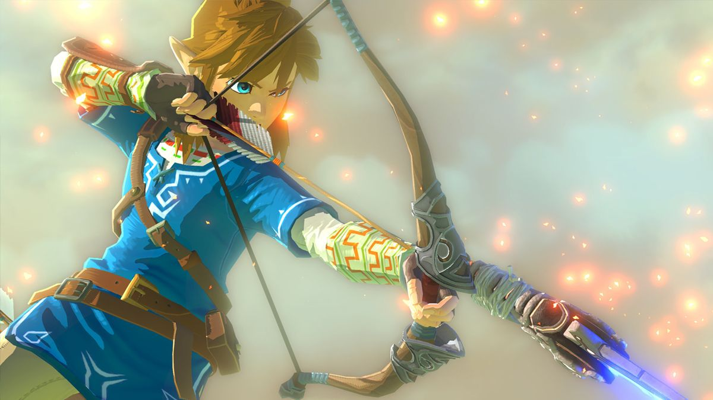
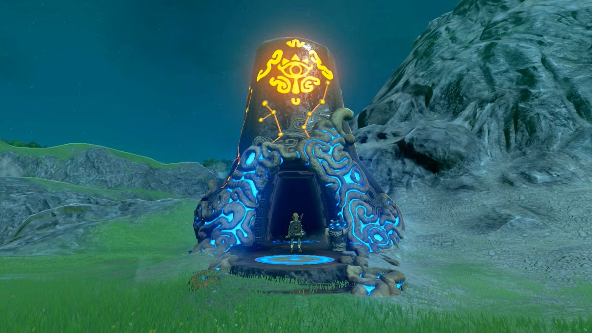
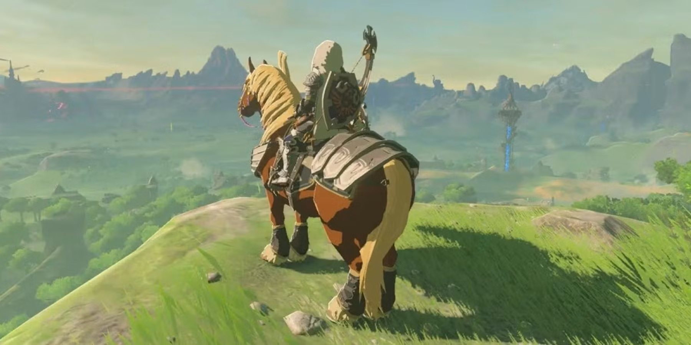
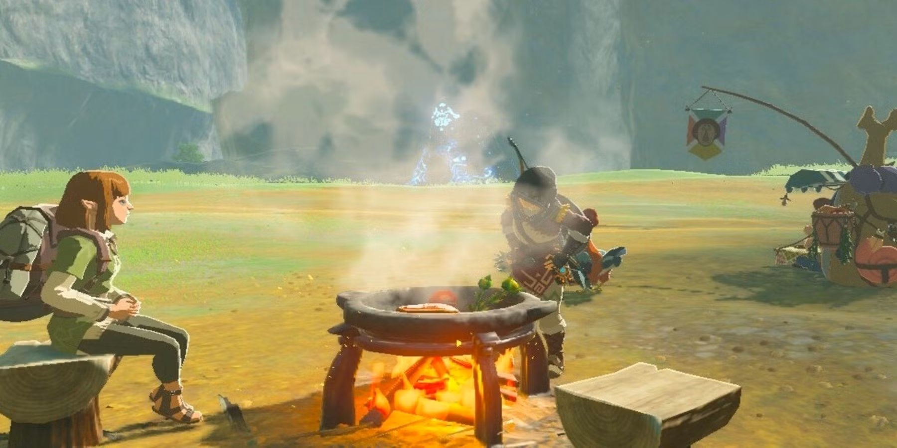
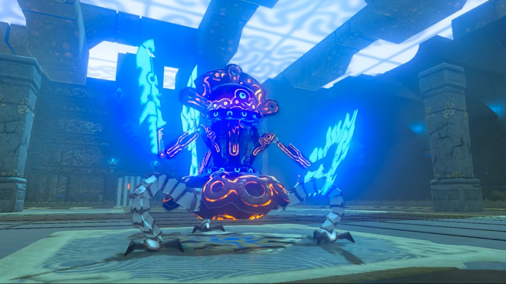
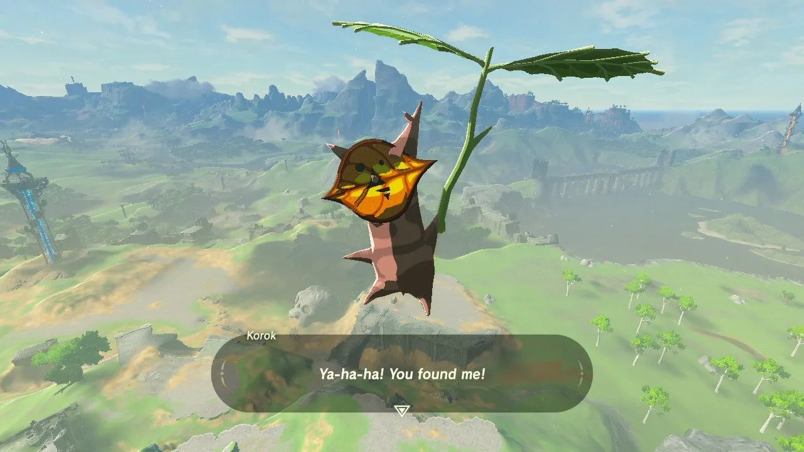
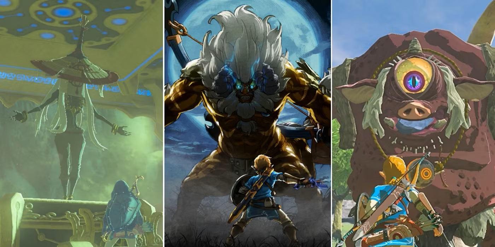
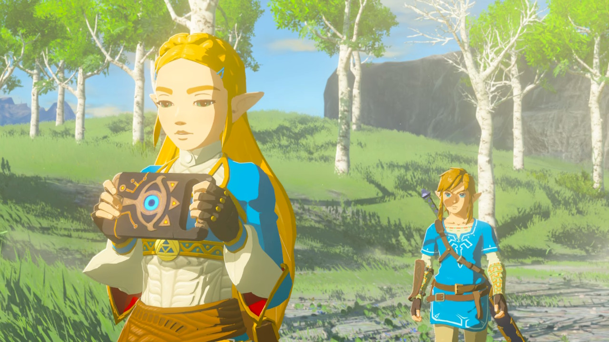

Fun Activities
A journey through Hyrule’s most iconic landscapes.
Things to do!
In the land of Hyrule, the world is wide open for adventure. You can explore mountains, forests, deserts, and ruins all filled with secrets waiting to be discovered. Below are some fun activities and quests to try as you travel through the kingdom!
1. Climb Every Mountain
 Challenge yourself to climb the tallest peaks in Hyrule!
Challenge yourself to climb the tallest peaks in Hyrule!
- Goal: Reach the top of Mount Lanayru, Death Mountain, and Hebra Peak.
- Bonus: Take a selfie with the camera rune at each summit!
2. Shrine Explorer
 Shrines are hidden puzzle chambers scattered all over Hyrule.- Goal: Find and complete at least 10 shrines.
- Extra Challenge: Can you locate a shrine without using the Sheikah Sensor?
3. Ride with Nature
 Catch and ride a wild horse, deer, or even a bear!- Goal: Register a horse at a stable and name it your favorite thing.
- Bonus: Find the mysterious Lord of the Mountain on Satori Mountain.
4. Cook Like a Hero
 Experiment with different ingredients to make meals and elixirs.- Goal: Cook 5 dishes with special effects (like extra hearts or stamina).
- Try This: What happens if you cook dubious food on purpose?
5. Guardian Hunter
 Test your combat skills against ancient Guardians.- Goal: Defeat 3 types - Stalker, Turret, and Skywatcher.
- Safety Tip: Don’t forget your Ancient Arrows!
6. Korok Hide-and-Seek
 The Koroks are tiny forest spirits hiding all over the map.- Goal: Find at least 25 Korok Seeds.
- Hint: Look for sparkling leaves, strange rock patterns, or floating balloons.
7. Boss Rush Challenge
 Take on Hyrule’s toughest foes!- Goal: Defeat one Divine Beast boss and the dreaded Calamity Ganon.
- Optional: Try the Master Mode for an even greater challenge.
8. Memory Hunter
 Recover Link’s lost memories to learn the story of Hyrule’s fall.- Goal: Find all 12 memory locations.
- Creative Idea: Draw or describe your favorite memory in your journal.
- Bonus Activity: Your Perfect Day in Hyrule
Write or draw what your perfect adventure day would look like!
- Where would you go first?
- What would you cook?
- Who would you help along the way?